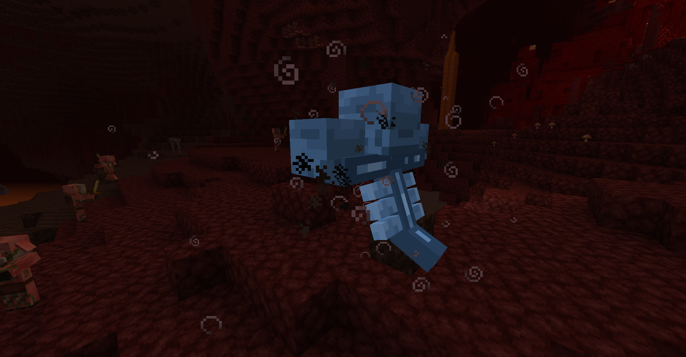
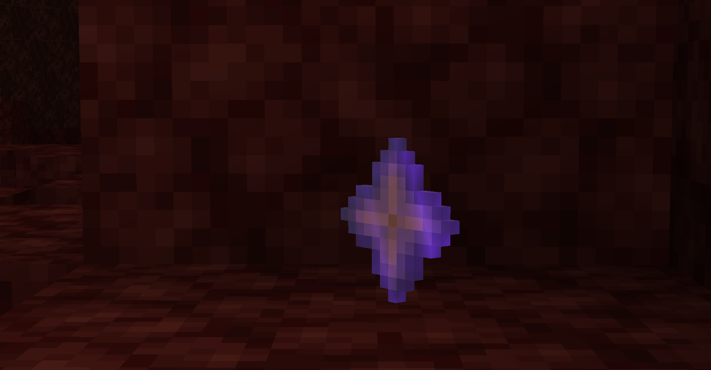

My Inspiration

(this isn't my inspiration but i couldn't think of anybody that was, so i chose a streamer that i watch.)
My favorite hobby is Playing games. I like to play games such as minecraft. I play for about 2 hours a day. I mostly mindlessly repeat the same task for an hour straight, or I find ways to get slight increases in meaningless numbers. 100% of the time i play is spent on procrasinating on nothing.Here, I will be focusing on the game Minecraft.
Gaming is fun because it can relieve stress and take your mind off of stressful things. Minecraft is a sandbox game that is mostly peaceful. Fom the soothing music to the pride you feel when completing the game, Minecraft is a extremely peaceful game, depending on how you play.
The Ender Dragon, the last and hardest boss of Minecraft.
 The Wither, The first boss of minecraft. Alongside is the reward for defeating the Wither, the Nether Star.
(this isn't my inspiration but i couldn't think of anybody that was, so i chose a streamer that i watch.)